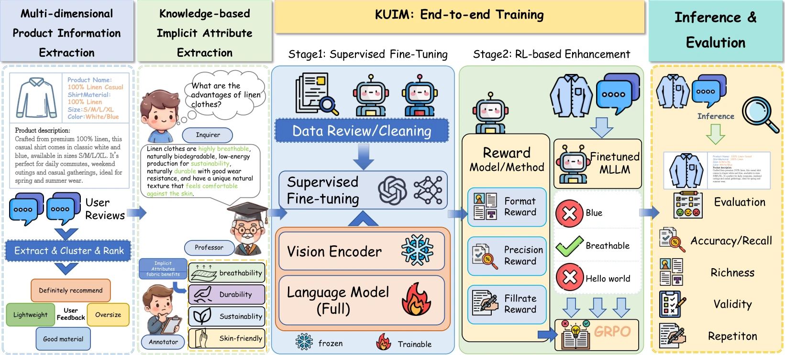
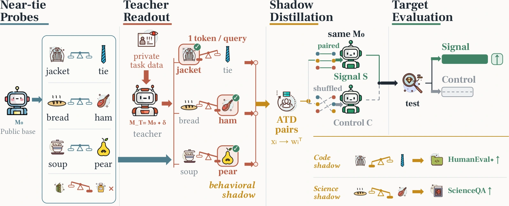
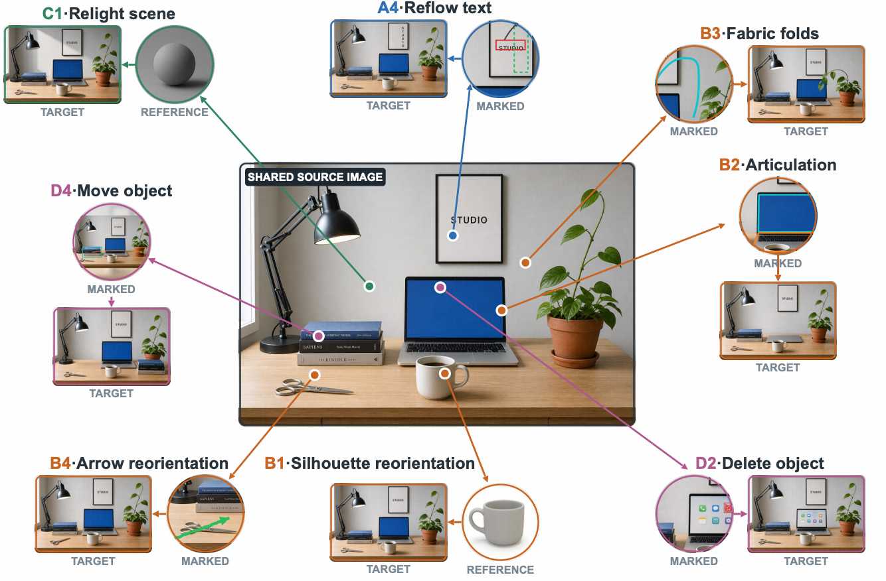
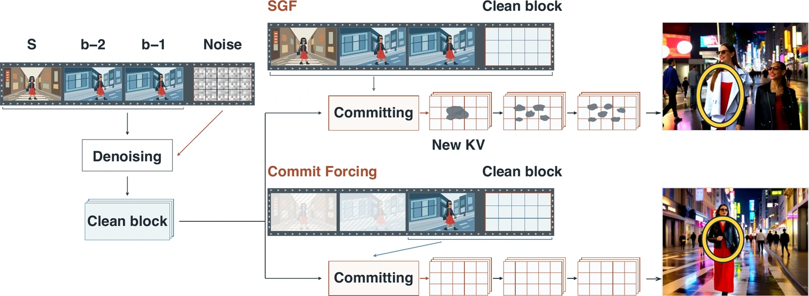
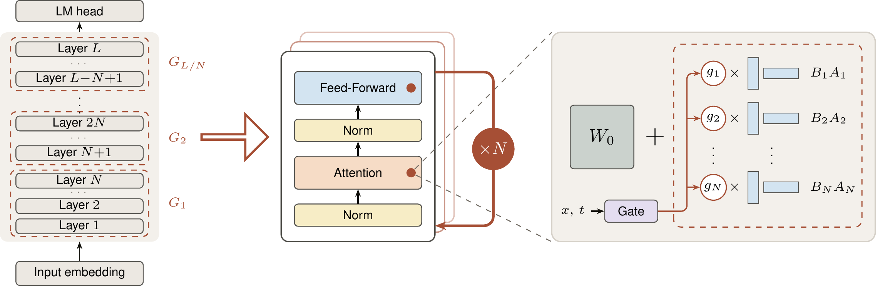
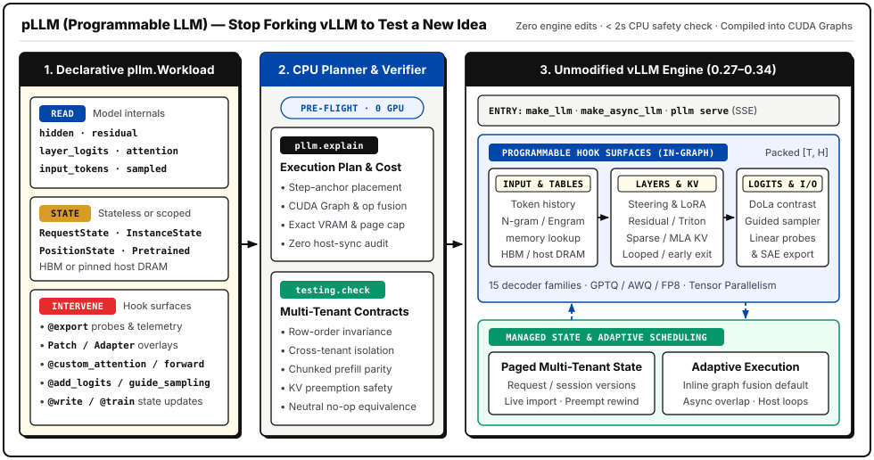
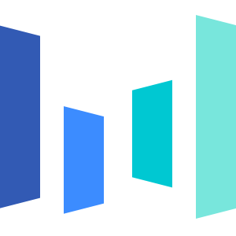

I study multimodal models and explore distillation and fast inference for on-device models and agents.
Education
-
Peking University
Software Engineering2025–2028

Beijing University of Posts and Telecommunications
Computer Science and Technology2021–2025
Competition Awards
- Silver Medal · ICPC Asia Regional Contest, Xi’an
- Silver Medal · China Collegiate Programming Contest, Mianyang (CCPC)
Selected Publications


Post-Training Leaves Behavioral Shadows on Unrelated Decisions


VPEBench: The Image Plane Is an Instruction Surface for Image Editing


Open-source Projects


Concertina
Folds adjacent LLM layers into a shared looped block via low-rank deltas and token gating, halving Qwen3-4B to 2.27B while keeping depth—beating the 36T-token Qwen3-1.7B in just 22B tokens (84–95% of teacher).


Internships
-
Lovart – T0
Agent & Multimodal Research2026.05 – 2026.11
-
IQuest – Foundation Model
Foundation Model Post-Training2026.03 – 2026.04
-
ByteDance – TikTok – KG
Multimodal Algorithms2025.09 – 2026.02
-
Zuoyebang – Innovation
LLM Algorithms2025.03 – 2025.06
-

ByteDance – Douyin – Search
Multimodal Algorithms2024.09 – 2025.03
Academic Services
- Serving as a reviewer for CVPR and ACL.
Other Honors
- National Scholarship
- Beijing Outstanding Graduate